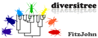
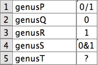
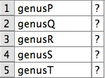
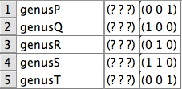
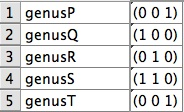
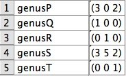
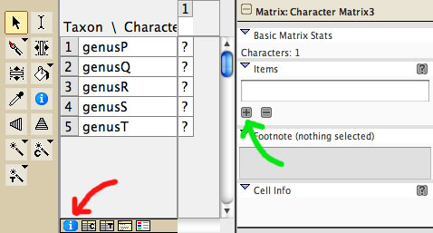

|  |
|
diversitree citation: FitzJohn, R. 2009. diversitree: comparative phylogenetic tests of diversification. An R package. http://www.zoology.ubc.ca/prog/diversitree
Mesquite.R's translation package (version 0.6) for diversitree:
W. Maddison. Latest version
diversitree is an R package written by Rich FitzJohn that analyzes species diversification as it relates to species traits. Please see diversitree's web page for more details, and for instructions as to how to install it in R.
To use the ape package from Mesquite you need to install the Mesquite.R package. When this is installed, the modules to link to diversitree are also installed. Not all diversitree functions are accessible in this way. We have chosen functions we felt would be of most interest; feel free to propose others to be made accessible.
Examples files are included with Mesquite.R, in the directory mesquite/R/MesquiteCallsR/examples, which will be in your Mesquite_Folder once Mesquite.R is installed.
diversitree can infer speciation and extinction rates using the BiSSE model (Maddison, W.P., P.E. Midford & S.P. Otto. 2007. Estimating a binary character's effect on speciation and extinction. Systematic Biology 56:701-710). diversitree's BiSSE analyses can be accessed in the same way as the BiSSE analyses of Mesquite's built-in package diverse, for example through the Character-Associated Diversification menu item under Analysis in a tree window. There are two choices
Except for the different character types used (binary for resolved, meristic for terminally unresolved) these two variants are used in much the same way. Both will present a dialog in which you can set parameter constraints if desired.
There are two ways to prepare the meristic matrix summarizing states in terminal taxa. You can build it directly (instructions later) or you can base it on a binary matrix you might already have that summarizes distribution of states 0 and 1 among terminal taxa. For instance, suppose you have this matrix for the five genera (A, below).
A  B  C  D 
This says what states are found in each genus. You need to translate this to frequencies of species with each state in each terminal taxon. First, make a new meristic matrix by selecting New Empty Matrix in the Characters menu. If you say you want one character, you will see a matrix like that in B, above.
In the Matrix menu for this matrix, select Alter/Transform Data>Binary to Freq. (for diversitree BiSSE Unresolved). You will be asked to select your binary character. After you're done, a new character should appear in the meristic matrix (C, above). Next, delete the first character (D, above).
The three items in this matrix represent the number of species in each terminal taxon with states 0, 1 and unknown. Edit these to match the number of species:

Remember to put spaces between the numbers. "(352)" is not the same as "(3 5 2)".
To build such a meristic matrix directly, you can ask for a new Meristic matrix, then turn on the Matrix Info Panel by touching the blue "i" (red arrow, below):

Then, using the "+" button under Items, add two more items. You can name them if you want "state0", "state1", and "stateUnknown". Then, edit the matrix to indicate frequencies of species with 0, 1 and unknown in each terminal taxon.
diversitree can simulate trees either under a simple birth/death process (similar to Mesquite's built in "Birth/Death Process Trees") or under a BiSSE model in which speciation and extinction rates depend on the state of a binary character.
Birth-death trees can be simulated wherever tree simulation can be done. Select "Simulate B/D Trees (diversitree: tree.bd)" as the tree simulator. Birth-death trees simulate speciation with constant rates of speciation and extinction.
Trees under the BiSSE model can be simulated along with the characters controlling diversification by choosing Trees & Diversification Characters under the Trees menu. Select the option Simulate BiSSE Trees (diversitree: tree.bisse). This simulation uses the same model (with some modifications) as Mesquite's built-in simulator "BiSSE Trees & Characters".
The primary calculations are done by the packages in R. Thus, we suggest a citation like this: "The <insert analysis name here> analysis was performed by the R package diversitree (FitzJohn, 2009) version <insert version number here>, run via the Mesquite.R package (Maddison & Lapp, 2011) in Mesquite 2.75 (Maddison & Maddison, 2011)."
Mesquite.R's translation package for diversitree is distributed under a GPL version 2 license.
DISCLAIMER: some of the R functions that Mesquite.R is employing may have bugs or misbehaviours; the authors of Mesquite are not responsible for such problems. BUG REPORTS: If a result is supplied but it seems incorrect, please contact both the authors of the R package and the authors of the Mesquite interface to the R package. If there is a crash, please contact first the authors of the Mesquite interface to the R package.